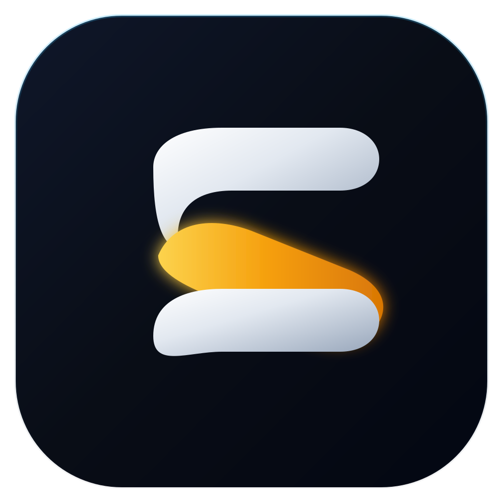

EduFlow
Подключаемся к серверу…
Не удалось подключиться. Проверьте интернет — если сервер «спал», его пробуждение занимает до минуты.

Подключаемся к серверу…
Не удалось подключиться. Проверьте интернет — если сервер «спал», его пробуждение занимает до минуты.